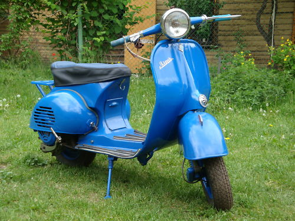

W latach 50. popularność w krajach zachodnich zaczęły zdobywać skutery, których nie produkowano do tej pory w centralnie planowanej gospodarce ZSRR. 19 czerwca 1956 Rada Ministrów ZSRR zdecydowała o podjęciu w kraju produkcji własnych skuterów (ros. motoroller)[2].
Z powodu braku czasu – produkcję planowano na 1957 rok – i dotychczasowych doświadczeń w konstrukcji skuterów, zdecydowano o skopiowaniu udanych modeli zachodnich. Zadanie wdrożenia do produkcji kopii włoskiej Vespy zlecono Wiatsko-Polańskiemu Zakładowi Budowy Maszyn (Wiatsko-Polanskij Maszynostroitielnyj Zawod, WPMZ) w Wiatskich Polanach, który wcześniej nie produkował pojazdów, natomiast zajmował się produkcją zbrojeniową.
Dokumentację opracowano we współpracy z Centralnym Biurem Eksperymentalno-Konstrukcyjnym (CEKB) w Sierpuchowie[2]. Jednocześnie w zakładach w Tule umieszczono produkcję skuterów Tuła T-200, skopiowanych z niemieckich Glass Goggo 200[3]. Już jesienią 1956 zademonstrowano dla radzieckiej prasy trzy próbne egzemplarze Wiatki WP-150. Bazę stanowiła Vespa GS150 z 1955 roku, jednakże silnik o mniejszej mocy i prostsza trzybiegowa skrzynia biegów zostały przejęte z wcześniejszego modelu Vespy 150 (Vespa GS150 miała skrzynię czterobiegową i rozwijała moc 8 KM).
W stosunku do Vespy GS różnice zewnętrzne były niewielkie, m.in. nieco większy był reflektor, prędkościomierz był okrągły zamiast owalnego lub trapezowego, a od 1960 roku na błotniku przednim była dekoracyjna metalowa czerwona flaga z gwiazdą[4]. Stylizowana nazwa Вятка (Wiatka) umieszczona była w tym samym miejscu, co w pierwowzorze – na prawej osłonie przedniej. Wiatka miała drobne różnice wymiarowe, w tym większy o 4 cm rozstaw kół i była nieco cięższa z powodu grubszych blach (Vespa – 111 kg).
Wiatka miała samonośne nadwozie z tłoczonej blachy, do którego mocowane były podzespoły[2]. Silnik o pojemności 148 cm³, jednocylindrowy dwusuwowy chłodzony powietrzem. Silnik razem z trzybiegową skrzynią biegów i wentylatorem do chłodzenia zamontowany był bezpośrednio na wahaczu tylnego koła, z prawej strony[2]. Skuter miał gaźnik K-55, następnie K-55W[6]. Sprzęgło było wielotarczowe, typu mokrego. Zmiana biegów następowała przez obrót rękojeści sprzęgła, na kierownicy po lewej stronie[2]. Po prawej stronie na kierownicy była rękojeść hamulca przedniego, a pedał hamulca tylnego był na podłodze. Dźwignia rozrusznika nożnego była po prawej stronie przy silniku. Zbiornik paliwa o pojemności 12 l umieszczony pod siedzeniem. Zawieszenie koła przedniego na wahaczu wleczonym z prawej strony, ze sprężyną śrubową i amortyzatorem[2]. Reflektor był ruchomy, w integralnej obudowie z kierownicą i prędkościomierzem; głęboki błotnik przedni był skręcany razem z kołem[2].
W toku rozwoju pierwotnej konstrukcji opracowano powiększony model W-175, z silnikiem o pojemności 174 cm³, unifikowanym z motocyklami produkowanymi przez ZiD w Kowrowie. Nie wszedł on jednak do seryjnej produkcji[1]. W latach 1965–1974 wyprodukowano następnie 520 174 sztuki całkowicie nowego, samodzielnie opracowanego modelu W-150M, w którym ulepszony silnik przeniesiono z wahacza koła do nadwozia, co zwiększyło komfort jazdy na skutek zmniejszenia nieresorowanej masy[2]. Moc silnika wzrosła do 6 KM, masa wynosiła 120 kg, a prędkość 75 km/h[1]. W latach 1974–1979 wyprodukowano 584 403 skuterów ulepszonego modelu Wiatka-3 Elektron, z zapłonem tyrystorowym (zastosowanym po raz pierwszy w ZSRR)[2]. Moc silnika wzrosła do 7 KM, a prędkość do 80 km/h[1]. W 1980 roku jednak zaprzestano produkcji skuterów w WPMZ, przeznaczając zakłady dla produkcji zbrojeniowej[2].